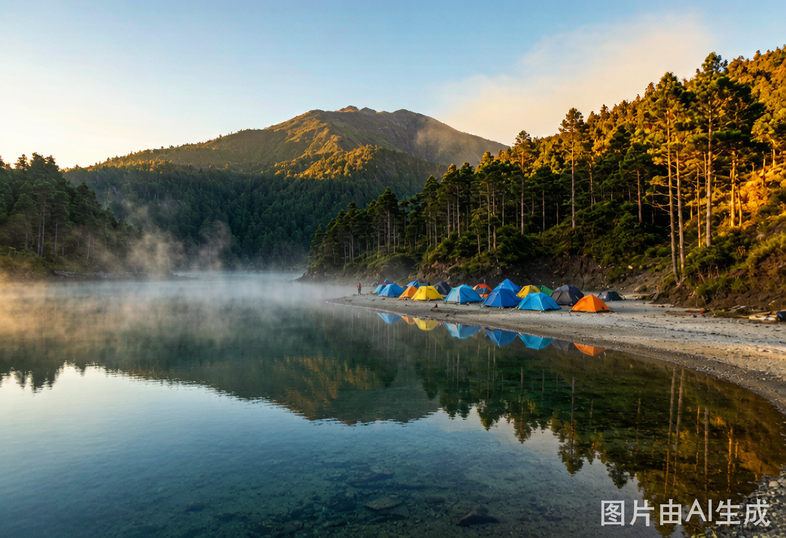

体验亮点
每一站的视觉记忆
9 天印尼，4 种地貌，从海滩到火山口
🅰️ 塞梅鲁路线核心体验

水明漾海滩日落Double Six Beach · 冲浪 + 沙滩豆袋

Ranu Kumbolo 高地湖2400m 营地 · 湖景日落 · 银河

Kelingking 精灵坠崖佩妮达头号景点 · T-Rex 悬崖
🅱️ 伊真路线核心体验
水明漾 3 天深度冲浪课 · 海滩俱乐部 · 金巴兰海鲜
伊真蓝色火焰全球唯二蓝火奇观 · 酸性火山湖
Kelingking 精灵坠崖佩妮达 · 住一晚岛上民宿